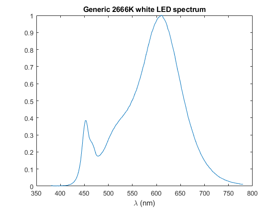

ReadASCIITableSpectrumFile
Navigate to: Home | Alphabetic list | Grouped list | Source code: ReadASCIITableSpectrumFile.m
Reads an (n x 2) matrix of numbers from an ASCII text file, with optional delimiter control and generic comment line handling, and creates a spectrum from these two columns
Contents
Syntax
rv = ReadASCIITableSpectrumFile(fn, opts)
Input Arguments
- fn: character string. Filename from where to read.
- opts: Name-Value pairs
| Name | Type | Value | Meaning |
| 'delimiters' | character string | '' (default) | set of characters interpreted as delimiters between numbers. See Matlab's 'split' documentation for details. If not specified, white space is used as delimiter(s). |
| 'name' | character string | '' (default) | When specified, the returned spectrum will have an additional field |'name'| with this parameter |
Output Arguments
- rv: A valid spectrum (struct with fields lam and val).
Algorithm
Calls ReadASCIITableFile to read the table, which is expected to have at least two rows and at least two columns. The first column is interpreted as wavelength in nanometers, the second column as the values. See SpectrumSanityCheck for requirements what constitutes a valid spectrum.
See also
ReadASCIITableSpectrumFile, ReadLightToolsSpectrumFile, SpectrumSanityCheck
Usage Example
function ExampleReadASCIITableSpectrumFile() fn = 'LED_2666K.sre'; spec = ReadASCIITableSpectrumFile(fn, 'name', 'Generic 2666K white LED spectrum'); % default delimiters are ok spec figure() plot(spec.lam, spec.val); xlabel('\lambda (nm)'); title(spec.name); end
spec =
struct with fields:
lam: [201×1 double]
val: [201×1 double]
name: 'Generic 2666K white LED spectrum'
